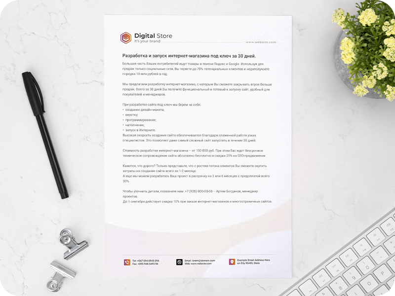
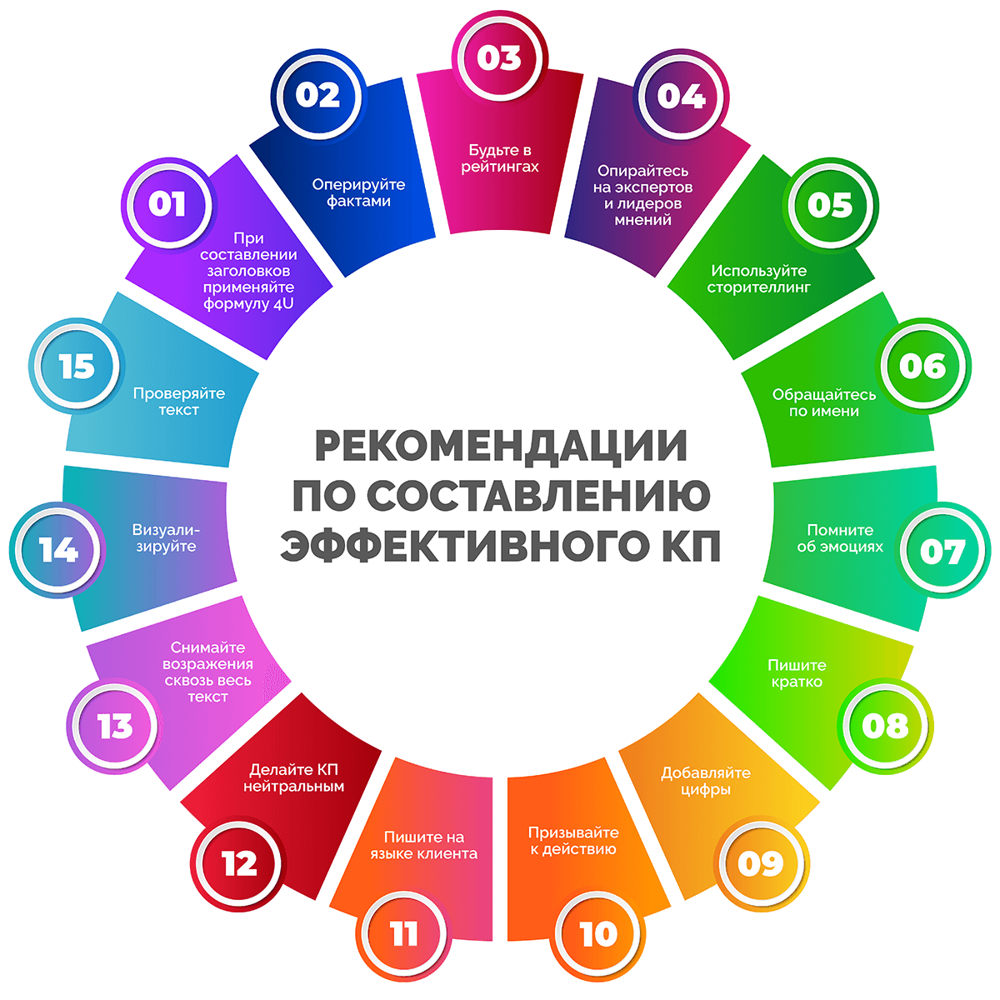

Бизнес в сфере B2B и налаживание деловых отношений с партнерами в современных условиях практически невозможно без коммерческих предложений (КП). Это касается как крупных компаний, так и средних, и даже микробизнеса. Каждый бизнесмен знает, что от коммерческого предложения зависит успех сделки и получение прибыли, поэтому важно уметь правильно презентовать себя на рынке.

Из сегодняшней статьи вы узнаете, что такое коммерческое предложение, кому и в каких ситуациях оно необходимо, как составить и оформить документ, а также что делать после отправки КП. Поехали!
Что такое коммерческое предложение
Коммерческое предложение – это то, что компания готова предложить клиенту или партнеру.
Еще лет 10-15 назад коммерческое предложение представляло собой «сухой» документ, содержащий краткую информацию о товаре или услуге с ценами и условиями сотрудничества. Сегодня бизнес уделяет пристальное внимание разработке КП, ведь от него зависит, удастся ли привлечь нового выгодного клиента, добиться роста продаж и получить прибыль.

Современное эффективное коммерческое предложение – это документ с хорошо проработанным рекламным текстом, оформленный в корпоративном стиле. КП печатают на бумаге, а также отправляют по email. Отвечает за его подготовку, как правило, маркетолог компании и менеджер по продажам.
Хорошее коммерческое предложение должно вызвать реакцию у получателя. Идеально, когда после его прочтения клиент или партнер проявляет интерес и обращается в компанию.
Существуют некоторые заблуждения относительно трактовки понятия «коммерческое предложение». Чтобы избежать неправильного понимания, уточним, что компред – это…
- Не пиар бизнеса. Некоторые компании настолько активно рассказывают аудитории о себе, что забывают о главном – об интересах и вопросах клиента.
- Не текст о компании. Клиенту, который хочет купить определенный товар оптом, совершенно не интересно читать о том, сколько у вас сотрудников и какие награды вы получили в прошлом году. Эта информация важна для бизнеса, но не для КП.
- Не презентация одного продукта. Если вы собираетесь отправить коммерческое предложение не по запросу заинтересованного в определенном продукте клиента, то в него обычно включают информацию обо всех основных услугах или товарах, а не об одном.
6 интересных фактов о коммерческих предложениях
{kind=link}
- Более 15% компаний работают в сегменте b2b без использования коммерческих предложений.
- При отправке коммерческого предложения клиенту или партнеру шансы на успешную сделку возрастают на 50%.
- Только 25% потенциальных клиентов интересуются полученным коммерческим предложением.
- Более 50% заинтересовавшихся партнеров решают, стоит ли работать с компанией, на основе информации из КП.
- Хороший дизайн коммерческого предложения в первые 2 месяца может увеличить продажи на 10-20%.
- Присутствие в коммерческом предложении информации о сопутствующих товарах или услугах повышает реальные продажи компании на 5-10%.
Задачи и цели коммерческого предложения
Многие из предпринимателей ошибочно считают, что коммерческое предложение должно продавать. Но это не совсем верное утверждение. Безусловно, глобальная цель предприятия при рассылке КП – продажа. Однако главная цель самого документа – добиться контакта с получателем, вызвать желание узнать подробности. По сути, коммерческое предложение переводит потенциального клиента на следующий этап воронки продаж.
После прочтения документа человек должен совершить целевое действие, к которому был призыв. Функции коммерческого предложения бывают самые разные, например, склонить клиента:
- совершить звонок по указанному телефону;
- оформить заказ в интернет-магазине;
- назначить встречу;
- запросить пробники продукции или прайс-лист;
- перейти на сайт по ссылке;
- связаться с менеджером в мессенджере, соцсетях или любым другим способом.
Для сегмента B2C компред составлять не обязательно. Это просто нецелесообразно, поскольку основным критерием выбора для потребителей выступает цена. Когда речь идет о работе с другими компаниями (продажи в сегментах бизнеса B2B и B2G), коммерческое предложение необходимо практически всегда. В этом случае от одного нового клиента могут зависеть продажи больших партий и долгосрочное сотрудничество.
Вот несколько основных задач коммерческого предложения:
{kind=link}
- рассказать возможным клиентам о бизнесе и продуктах компании, выделиться на фоне конкурентов;
- найти новых потребителей услуг или закупщиков продукции;
- продлить текущий контракт;
- пригласить партнеров для взаимовыгодного сотрудничества, наладить полезные связи;
- привлечь внимание к бренду;
- убедить инвесторов профинансировать проект;
- посмотреть со стороны на преимущества и недостатки своего бизнеса.
Виды коммерческих предложений
Коммерческие предложения разделяют на несколько видов в зависимости от того, насколько тесный был контакт с клиентом и был ли он вообще. Давайте рассмотрим в этой статье, чем характеризуется каждый из них.
{kind=link}
Холодное коммерческое предложение
Это КП, предназначенное для массовой рассылки. Его отправляют неподготовленному человеку, который теоретически может быть потенциальным клиентом и с которым ранее не общались представители компании по вопросам работы. Электронные адреса для таких рассылок находят в каталоге и через поиск.
Фактически это спам. Однако в некоторых случаях он может заинтересовать. В среднем открываемость холодных коммерческих предложений составляет около 20%, а по ссылкам переходит 3-4% пользователей.
Цель холодного коммерческого предложения – привлечь внимание, заинтересовать получателя, а главная задача – заставить прочесть КП до конца.
При разработке такого коммерческого предложения учитывают три риска «выбрасывания»:
- при получении – тема электронного письма должна быть интересной и актуальной для получателя, в случае с бумажным документом делают акцент на оригинальном конверте, который сможет выделить письмо среди писем конкурентов;
- при открытии – основное предложение должно быть достаточно заметно и привлекательно сформулировано;
- при прочтении – в письме нужно использовать все возможные маркетинговые фишки и стратегии убеждения.
|
Плюсы |
Минусы |
|
|
Рассылка таких коммерческих предложений имеет смысл, если вы продаете единичный продукт (предоставляете услугу или реализуете товар), которая может быть интересна множеству других компаний. Примеры: создание и продвижение сайта, консалтинговые услуги, аудит, аутсорсинг для бизнеса и т. д.
Оптимальный объем холодного коммерческого предложения – не более 1-2 страниц. Больший объем документа сильно снизит шансы на то, что получатель захочет тратить время на его чтение.
Горячее коммерческое предложение
Это персональное КП. Его можно отправить после переговоров с потенциальным клиентом, который интересовался услугой или товаром и ждет подробное КП, оптимизированное под условия своего бизнеса. В этом случае документ содержит не только главное предложение, но и может описывать условия работы, включать индивидуальный прайс-лист или расчет / смету, ответы на конкретные вопросы, способы решения проблемы. К нему могут прилагаться технические паспорта, сертификаты, разрешения и другие документы, которые убедят потенциального клиента принять положительное решение.
Горячее коммерческое предложение должно соответствовать потребностям компании клиента. Его основная цель – заключение договора и сделка.
|
Преимущества |
Недостатки |
|
|
Объем горячего коммерческого предложения может достигать 10-20 страниц. Его оформляют как в виде официального документа, так и в формате презентации.
Теплое коммерческое предложение
Это разновидность шаблонного коммерческого предложения с возможностью персонализации. Теплое КП отправляют клиентам, с которыми компания ранее уже каким-то образом взаимодействовала. Например, клиент:
- оставил заявку на сайте;
- запросил КП через сайт или по email;
- самостоятельно связался с менеджером.
Теплое коммерческое предложение составляется с учетом информации, полученной на всех этапах взаимодействия с клиентом. Его главная задача – «подогреть», привлечь внимание, ответить на вопросы.
Основная часть теплого коммерческого предложения является шаблонной. В нее вносятся лишь незначительные изменения с учетом данных о клиенте. Например, можно добавить обращение по имени и отчеству.
|
Преимущества |
Недостатки |
|
|
Теплое коммерческое предложение открывают чаще, чем холодное, но по конверсии в сделку оно сильно не дотягивает до горячего.
Оферта
Представляет собой особый вид коммерческого предложения в форме публичного договора, который не требует подписания. Его используют на сайтах SaaS-сервисов, в интернет-магазинах и ряде других интернет-ресурсов.
Выполнение условий договора (например, регистрация) считается согласием с условиями предложения.
Структура коммерческого предложения
Классическое коммерческое предложение имеет вполне типовую структуру. В этом разделе статьи рассмотрим основные блоки, которые включают в документ.
{kind=link}
- Шапка. В ней размещают логотип бизнеса, указывают наименование компании, ее адрес, контакты, иногда реквизиты. В горячих КП эта информация может размещаться на отдельном титульном листе.
- Заголовок. Это должен быть привлекающий внимание и вызывающий интерес короткий текст. Дополнительно может использоваться графическая иллюстрация. При необходимости может добавляться небольшой подзаголовок, который определяет продукт (услугу или товар).
- Лид. Располагается сразу после заголовка. Этот текст должен заинтересовать потенциального клиента настолько, чтобы он захотел прочитать КП. Чаще всего здесь раскрывают главную проблему, которую можно решить, воспользовавшись предложением.
- Оффер. Непосредственно предложение, располагающееся в начале (иногда и в конце) КП. Оффер должен быть сформулирован так, чтобы человек увидел свою выгоду.
- Основная часть. Здесь показывают свойства продукта, приводят аргументы в пользу его выбора и сотрудничества в целом, демонстрируют преимущества и выгоды.
- Цена и ее аргументация. В этом блоке указывают цены товаров или услуг, приводят расчет и обоснование стоимости.
- Обработка возражений. Необходимо убедить читателя в надежности компании. В этом помогут факты, кейсы, гарантии, отзывы о компании, письма благодарности.
- Призыв к действию (CTA). Обязательный блок, без которого коммерческое предложение не имеет смысла. Важно указать клиенту, что конкретно ему нужно сделать, чтобы начать работу с вашим бизнесом, например, позвонить или заказать, зарегистрироваться, подписаться.
- Контакты. Здесь прописывают несколько способов связи с менеджером. Обычно это телефон, электронная почта, мессенджеры.
- P.S. Постскриптум может заставить клиента задуматься о своих действиях, поэтому его уместно включить в некоторые коммерческие предложения. В этом блоке можно поставить в известность о дефиците товара, указать дедлайн для заказа услуги или продаж, актуализировать главную боль или проблему.
В зависимости от конкретной задачи коммерческого предложения его структура может меняться, однако важно излагать информацию последовательно. Каждый блок должен подводить клиента к ключевой цели.
На чем держится все коммерческое предложение
Несмотря на четкую структуру и грамотно составленный текст, коммерческое предложение может оказаться неэффективным, если не соблюдается ряд основных принципов.
{kind=link}
- Выгодное предложение. Мало что-то предлагать – клиент должен четко видеть, что его ждет в результате сотрудничества. Если выгоды туманны, не стоит ожидать, что КП будет иметь успех.
- Правильная аудитория. Важно не распыляться, пытаясь работать сразу со всеми. Гораздо лучше выбрать один сегмент целевой аудитории, работа с которым может стать наиболее продуктивной.
- Актуальность и своевременность. Если вы сделаете предложение слишком рано или слишком поздно, оно не получит должного внимания, а вы потеряете потенциального клиента. Отправлять КП нужно тогда, когда заказчик остро нуждается в вашем продукте (товаре или услуге).
- Закрытие потребностей. Важно разбираться в бизнесе и четко понимать, что интересует клиента и какие проблемы он испытывает. Именно их должно решать ваше предложение. Если вы предлагаете продукт, который не покрывает потребности клиента, он отправит КП в урну.
- Ваши действия. Потенциальному клиенту важно донести, что вы будете делать, чтобы решить его проблему. Чем четче будет прорисован порядок действий, тем больше вероятность заключить контракт и закрыть продажу.
- Управление. Необходимо рассмотреть административные аспекты сотрудничества: условия, бюджет, этапы работы и предварительные сроки.
С чего начать составление коммерческого предложения
Перед тем, как составить коммерческое предложение, требуется подготовка. В рамках нее нужно сделать ряд действий.
- Сформулировать четкую цель создания КП. Пример: продажа товара существующему клиенту или привлечение нового.
- Правильно определить целевую аудиторию, изучить потребности, основные проблемы и вопросы потенциальных клиентов, социальные и психологические признаки, демографические характеристики.
- Сегментировать ЦА, чтобы было удобнее составить коммерческое предложение под разные целевые группы клиентов.
- Проанализировать конкурентов, запросить и изучить их коммерческие предложения.
- Провести самоанализ и ответить на несколько вопросов:
- Почему человек заинтересуется предложением?
- Какую выгоду он получит, когда купит ваш товар или закажет услугу?
- В чем вы превосходите конкурентов и как это доказать?
- Что конкретно должен сделать клиент после прочтения КП?
- Выбрать формат КП: почтовая рассылка, презентация, рекламное объявление (реклама) и т. д.
- Определиться, нужен ли дизайн.
- Составить план документа.
Выполнив все эти действия, вы будете полностью готовы приступить непосредственно к составлению КП для бизнеса.
Как правильно составить коммерческое предложение
Процесс составления коммерческого предложения можно разделить на несколько шагов. Ниже в статье разберем инструкцию и какие действия предстоят на каждом этапе.
{kind=link}
Шаг 1. Придумайте привлекательный заголовок
Это первое, на что обратит внимание потенциальный клиент, когда откроет коммерческое предложение. От того, насколько вы попадете в его боль или интерес, будет зависеть, начнет ли он читать документ и тратить на него время. Бывает, что заголовок раскрывает суть предложения, но не показывает, насколько оно важно для клиента.
Важно, чтобы заголовок обращался к клиенту. В нескольких словах показывал проблему и ее решение.
Хороший заголовок КП должен быть:
- кратким;
- конкретным;
- понятным;
- глубокомысленным;
- цепляющим.
|
Правильно |
Неправильно |
|
Уникальные растения для ландшафтного дизайна – 5000 саженцев в наличии. |
Коммерческое предложение на поставку саженцев для ландшафтного дизайна. |
Вот основные ошибки, которые допускают авторы при составлении заголовков.
- Спамность. Упоминание выгод, цифр, фактов в заголовках очень хорошо стимулирует интерес. Главное, не переборщить. Вот несколько слов, которые могут оттолкнуть потенциального клиента или вовсе отправить письмо в спам: бесплатный, выгодно, только сегодня, предложение ограничено, гарантируем и т. п.
|
Правильно |
Неправильно |
|
Снижение закупочной стоимости на 30% оптовым клиентам магазина Х. |
Только сегодня скидка на все товары 30% при покупке оптом. |
- Размытость. Стремление донести потенциальному клиенту его выгоды может сыграть злую шутку – заголовок получится бессмысленным и непонятным.
|
Правильно |
Неправильно |
|
Размещение вашей рекламы на билбордах: 30 000 потенциальных клиентов по 25 копеек каждый. |
Получите 30 000 потенциальных клиентов по 25 копеек каждый. |
- Бесполезность. Эту ошибку совершают те, кто делает ставку на интригу. Но мало кому захочется тратить драгоценное время на разгадывание ребусов. Заголовок должен быть конкретным, чтобы его было проще понять.
|
Правильно |
Неправильно |
|
Сервис Х помогает спортивным интернет-магазинам зарабатывать больше на 30%. |
Фишка, которую используют ваши конкуренты для повышения прибыли. |
- Субъективность. Конкретика и факты куда лучше, чем оценочные суждения а-ля «лучший», «выгодный», «быстрый». Клиент не любит, когда за него делают выводы.
|
Правильно |
Неправильно |
|
Бухгалтерский аутсорсинг – 12 месяцев по цене 9. |
Самые выгодные условия бухгалтерского аутсорсинга. |
Приведенные выше правила актуальны для холодных коммерческих предложений, которые проще всего отправить массовой рассылкой широкой аудитории. Когда речь идет о горячем КП, допускается также написать приветствие, обратиться к клиенту по имени.
Шаг 2. Проработайте лид и оффер
Лид – первый абзац текста после заголовка. Необходимо написать его так, чтобы привлечь клиента, и он захотел продолжить знакомиться с коммерческим предложением. Обычно именно в этой части документа указывают на главную проблему. Лид плавно переходит в оффер.
Оффер помогает описать суть коммерческого предложения и выступает в роли мини-УТП. Именно в нем вы рассказываете об уникальности продукта, дополнительных сервисах, скидках, акции, сроках доставки, каналах и прочих выгодах, которые вы обещаете клиенту.
Пример удачного блока «лид + оффер»:
Количество производственных рабочих вашей компании составляет 100 000 человек. Им нужно 200 000 комплектов униформы ежегодно плюс закупочные расходы на сумму 1,5 млн руб. каждый сезон.
Мы предлагаем пошив униформы из высокопрочных тканей для ваших рабочих. Работая с нашим швейным производством, вы сэкономите 40% на закупке спец. одежды и сможете тратить на 30% меньше денег на ее замену.
Наверняка компания уже с кем-то сотрудничает. Поэтому задача лида и оффера – показать, что работа с вами будет выгоднее.
На этом этапе многие допускают ошибки. Разберем самые распространенные.
- Слишком длинное и расплывчатое вступление. Заинтересовавшись заголовком, клиент может потерять интерес в процессе чтения огромного вступления.
- Составление оффера без учета степени осведомленности клиента. Необходимо делать предложение на основании того, в чем именно он нуждается (проблема), и учитывать то, что уже предлагают конкуренты.
- Расплывчатый оффер, который не отражает истинную ценность предложения и конкретные выгоды клиента.
- Составление оффера, в правдоподобности которого клиент может засомневаться. Если вы предлагаете покупать что-то, что кажется невозможным, объясните, как вы это делаете.
- Клише и общие фразы. Штампы в стиле «быстрая доставка», «низкая цена», «опытные специалисты», «эксклюзивная продукция» сильно снижают эффективность оффера, даже если само предложение действительно стоящее, по сравнению с конкурентами.
Шаг 3. Продумайте основную часть КП
В этой части коммерческого предложения нужно подробнее рассказать не только о том, что вы предлагаете, но и на каких условиях. Прочитав этот блок, клиент должен понять, что работать с вами выгодно.
Здесь можно привести описание услуги или товара, характеристики, ценность, уникальность, а также расписать выгоды клиента.
На что именно стоит сделать акцент:
- КП на услуги: список или последовательность работ, экспертность, техническая поддержка, сервис, лицензии и сертификаты, схема сотрудничества и оплаты, условия для клиентов, отличия от конкурентов;
- КП производителя: объемы выпускаемой продукции, ее ассортимент и особенности, производственные возможности, индивидуальное производство, минимальный заказ, условия доставки;
- КП поставщика: ассортимент, регулярность и сроки поставок, минимальный объем закупки, условия для оптовых покупателей, способы доставки, скидки и подарки для оптовиков, особенности сервиса, выгоды клиента.
При демонстрации выгод стоит избегать общих фраз, подчеркивая их правдивость цифрами, фактами, расчетами.
Есть несколько правил, следуя которым вы сможете подготовить хорошее КП.
- Характеристики продукта показывают с точки зрения выгодности. Пример: наше оборудование экономично, т. к. потребляет на 25% меньше электричества, а значит, вы сэкономите около 15% на оплате электроэнергии.
- Преимущества демонстрируют по принципу от незначительных к самым значимым. Наиболее сильный аргумент указывают в оффере.
- Утверждения должны подкрепляться аргументами: точными данными, результатами исследований, графиками, расчетами, ссылками на авторитетные источники.
- Никаких преувеличений и обещаний того, что не сможете сделать.
Шаг 4. Назовите и обоснуйте цену
Цена или прайс-лист с указанием стоимости популярных групп товаров – обязательная составляющая коммерческого предложения. Если невозможно назвать конкретную стоимость, все равно стоит указать базовые цены, на которые клиент сможет ориентироваться. Например, в формате «от… до…» с указанием факторов влияния.
Если в коммерческом предложении нет цен, это значит, что клиент:
- будет вынужден сам запрашивать ваши расценки, но, скорее всего, он просто отложит КП и забудет позвонить;
- может решить, что ваши услуги или товары стоят очень дорого, особенно, если условия привлекательные, и само КП хорошо оформлено;
- может подумать, что вы работаете не очень честно, а ваша цена на самом деле отличается в зависимости от заинтересованности клиента.
Если ваши расценки выше, чем у конкурентов, предстоит аргументировать высокую стоимость. Будьте уверены, что первое, о чем подумает клиент, глядя в прайс, – почему так дорого? Если у вас дешевле, чем у конкурентов, низкую цену можно представить как выгодную акцию.

При обосновании цены используют несколько подходов:
- Рассказ о ценности и уникальности продукта или сотрудничества, что оправдывает высокую стоимость. Пример: в 20 000 рублей входит стоимость программного обеспечения и его полная круглосуточная техническая поддержка в течение года.
- Разделение цены на составляющие. Пример: за 200 тыс. рублей вы получаете изготовленную по индивидуальным параметрам и готовую к эксплуатации бытовку с доставкой на объект, установкой, монтажом, обслуживанием и бессрочным купоном на скидку 15% при последующих заказах.
- Сравнение стоимости с чем-то важным для клиента. Пример: бухгалтерское обслуживание обойдется вам в 80 000 руб. в год, а штраф со стороны налоговой инспекции в случае допущения ошибки в отчетности – 250 000 руб.
- Разбивка цены на меньшие периоды времени. Пример: по договору юридического сопровождения вы будете тратить 410 рублей в день. В пересчете на год экономия составит почти 37 тысяч рублей, так как при заключении контракта вы получаете бесплатные 3 месяца юридического сопровождения.
- Использование пакетных предложений: стандарт, премиум и эконом. В сравнении с премиальным стандартный пакет не выглядит слишком дорогим.
- Предложение беспроцентной рассрочки или льготного кредита. Возможность оплачивать продукт частями делает высокую цену не такой пугающей.
Шаг 5. Снимите возражения и убедите клиента
Маркетинг предполагает на этом этапе внесение последних штрихов в аргументацию выгодности предложения, надежности фирмы и отсутствия рисков. Здесь можно:
- указать важные сведенья о компании, которые могут положительно повлиять на решение потенциального клиента (например, лицензии, достижения, опыт, специализация, место на рынке России);
- предложить бесплатно попробовать продукт, чтобы увидеть его и оценить качество;
- рассказать о гарантиях, например, возврат средств в конкретных случаях, гарантийный сервис, выплата компенсаций, бесплатное консультирование, страхование груза за счет компании и т. д.;
- предоставить социальные доказательства: кейсы, рекомендации компаний клиентов, фото работ «до» и «после», известные клиенты.
Задача этой части коммерческого предложения – окончательно убедить клиента в том, что работой с вами он останется доволен.
Шаг 6. Напишите призыв к действию и укажите контакты
Очень важно указать в письме, какое именно действие клиент должен совершить. В противном случае он может так и не позвонить или не перейти по ссылке. Здесь же, кроме призыва, обозначают ограничения по объему товара на складе или по сроку заказа.
Пример призыва к действию в коммерческом предложении:
Позвоните нам и получите полный прайс-лист на все изделия. Предложение актуально, пока товар в наличии. Общее количество – 15 000 единиц. Контакты…
Таже можно сообщить о дополнительной выгоде для покупателя, например, предложить скидку или другие бонусы при заказе до определенной даты.
Иногда часть текста из этого блока выносят в отдельный раздел – постскриптум.
Неотъемлемая часть призыва к действию – контакты для связи. Сразу после предложения позвонить или написать нужно указать телефон менеджера, email. Не будет лишней и другая контактная информация, благодаря которой клиент сможет ближе познакомиться с компанией и ее деятельностью: URL сайта, ссылки на социальные сети, мессенджеры, YouTube.
Золотое правило коммерческого предложения – используйте «вы» вместо «мы». Не пишите, какая вы чудесная компания. Расскажите, что получит клиент при работе с вами.
Как оформить коммерческое предложение
Чтобы коммерческое предложение оказывало желаемый эффект и приносило продажи, просто написать текст для него недостаточно – нужно продумать оформление. Далее в статье рассмотрим, на что стоит обратить внимание, оформляя КП.
{kind=link}
Структурированность
Содержание структурированного коммерческого предложения легче воспринимается, информация лучше запоминается. Рекомендуем придерживаться следующих правил при структурировании текста.
- Заголовок выделяйте крупным шрифтом и размещайте по центру страницы. Оптимально, если он помещается на одной строке.
- Разбивайте текст на короткие абзацы не более, чем по 3-5 строк. Один абзац должен соответствовать одной мысли.
- Разделяйте блоки / разделы КП, включая заголовки и подзаголовки.
- Используйте маркированные и нумерованные списки, таблицы, графики.
- Важные моменты выделяйте. Можно использовать жирный шрифт, курсив, нижнее подчеркивание или различные цвета.
Читабельность
Каким бы способом ни распространялось КП, его текст должен быть читабельным. Вот основные моменты.
- Размер шрифта и межстрочный интервал должны соответствовать размеру страницы.
- Делайте отступы по периметру страницы, не размещайте текст слишком близко к краям листа. Обычно сверху, снизу и слева отступают 2 см, справа – 1 см.
- Выбирайте привычный для документов шрифт, который легко читается. Избегайте вычурного начертания, завитков и других нестандартных элементов. Для электронных коммерческих предложений используйте шрифты без засечек, для бумажных – с засечками.
- Пишите текст темным шрифтом на однотонном светлом фоне.
- Избегайте слишком светлого и слишком яркого текста. Читатель не должен напрягать зрение при прочтении КП, также не должен создаваться эффект «вырви глаз».
Минимализм
Коммерческое предложение – официальный документ, при его составлении рекомендуется:
- использовать не больше двух шрифтов и трех цветов на странице;
- избегать пестрых, слишком ярких и агрессивных элементов.
Глядя в КП, читатель должен сосредоточиться на его содержании, в этом помогает оформление в минималистическом стиле.
Наглядность
Визуальные элементы, помогающие читателю лучше понять суть предложения, всегда приветствуются, но с ними важно не переборщить. На странице должно быть не больше двух крупных изображений.
- Продемонстрируйте ваш товар или результат оказания услуги, который клиент получит по итогам сотрудничества.
- Данные статистики, исследований покажите в виде графиков, диаграмм.
- Часть информации представьте в виде инфографики.
- В блоке о ценах используйте таблицы.
Узнаваемость
Если у компании есть фирменный стиль (например, логотип, корпоративные шрифты и цвета), стоит применять его и при составлении коммерческих предложений. Горячие КП (коммерческие письма) оптимально оформлять на фирменном бланке.
Дизайну стоит уделять особое внимание. Он влияет на то, даст ли коммерческое предложение нужный эффект, не мнее, чем текст. Можно разработать свой уникальный дизайн КП или взять готовый шаблон / образец коммерческого предложения из интернета. Так или иначе, предстоит продумать все до мелочей: идеи, расположение блоков, акценты, цветовая гамма.
Формат
Когда коммерческое предложение подготовлено, нужно выбрать формат, в котором оно будет распространяться. Строгих правил здесь не существует, можно использовать любые варианты, которые удобны вам и клиенту. Вот основные:
- PDF-файл;
- презентация PowerPoint;
- файл Excel (подходит, если КП включает масштабные номенклатурные списки);
- web-страница;
- бумажный формат (для передачи при личной встрече или отправки по почте).
Проверка готового коммерческого предложения
Чтобы убедиться, что коммерческое предложение будет производить на клиента желаемое впечатление, нужно проверить документ. Для этого используют разные методы.
- Визуальная проверка. Убедитесь, что при просмотре на разных устройствах, типа компьютера, смартфона, коммерческое предложение хорошо читается. Распечатайте и просмотрите его не только в цветном, но и в черно-белом виде.
- Беглая проверка. Взгляните на коммерческое предложение. Проанализируйте, какие элементы бросаются в глаза, можно ли по ним понять суть предложения, основную проблему. Если да, то все отлично.
- Проверка «на пальцы». Читайте написанный текст без слов «лучший», «уникальный», «замечательный» и других подобных. Если содержание без них останется понятным и интересным, значит, коммерческое предложение удалось.
- Проверка на понимание. Поищите среди знакомых человека, который подходит под описание портрета клиента, и дайте ему прочесть КП. Если он сразу поймет суть предложения, чем занимается компания, оценит выгоды, можно считать, что документ получилось составить правильно.
Как отправлять коммерческое предложение
Когда речь идет о горячем КП, вопросов по способу его отправки обычно не возникает – клиент сам говорит, в каком виде ему нужно предоставить документ. Что касается холодных коммерческих предложений, то их можно отправить по-разному. Вот 4 основных способа поделиться КП.
- HTML-формат. Клиент получит коммерческое предложения прямо в теле электронного письма. Адресату это удобно, т. к. ничего не нужно скачивать, а просмотреть документ можно с любого устройства и в любой момент времени, имея доступ к почте. Преимущество отправителя в том, что можно отследить, сколько КП были открыты и прочитаны, кем и в какое время. Однако способ требует применения специальных программ, а также сервисов для email-маркетинга.
- Электронное сопроводительное письмо с КП во вложении. В этом случае отправитель имеет возможность представиться и заинтересовать потенциального клиента прямо в электронном письме. Файл с самим коммерческим предложением получателю нужно будет открывать дополнительно.
- Ознакомительное письмо, потом КП. Здесь отправка КП осуществляется в два этапа: сначала посылают письмо, которое выявляет интерес потенциального клиента, затем после установления контакта можно отправить непосредственно коммерческое предложение.
- Бумажное письмо почтой (офлайн-формат). Этот вариант может оказаться вполне эффективным, если конкуренты заваливают клиента электронными КП. Но к пересылке данным способом нужно подготовиться: плотная глянцевая бумага, качественная печать, оригинальный конверт. Хороший эффект дает вручную написанный адрес.
Рекомендуется попробовать все способы рассылки коммерческого предложения, поскольку невозможно точно определить, какой из них сработает лучше других.
Работайте с КП после его отправки
Перед рассылкой коммерческих предложений нужно подумать о дальнейших действиях. Ведь обрабатывать заявки, отвечать клиентам и работать с ними нужно будет быстро.
В первую очередь собирайте заявку. Нельзя допустить ситуацию, в которой клиент откликнется на письмо, а вы пропустите отклик.
- На email. Если вы начинаете активную кампанию по рассылке коммерческих предложений и ожидаете большой отклик, заведите для этих целей отдельную почту и проверяйте ее минимум один раз в день. Если заявок предполагается мало, можно использовать основной email.
- В CRM. Система дает возможность фиксировать каждую заявку, заводить на каждого клиента отдельную карточку, собирать и накапливать информацию о нем. Имея CRM-системы, можно закрывать больше продаж и лучше обслуживать клиентов.
- В Google Forms. Сервис от Google для сбора данных о новых клиентов в общую таблицу. Здесь можно задать в настройках нужные поля и быстро вводить сведенья о заказчиках.
- В мессенджерах. Приложения для обмена мгновенными сообщениями (например, Telegram, Viberи др.) хорошо подходят для приема заявок и быстрых ответов на них в течение пары минут. Хорошо подходят для этого и чат-боты на сайтах.
Если в качестве компреда используется специально подготовленная страница в Интернете (лендинг), настройте аналитику на базе сервисов Google Analytics, Яндекс Метрика и отслеживайте поведение потенциальных клиентов.
Задав цели и настроив аналитику на выполнение определенного действия, дальше можно подготовить плацдарм для последующей работы с клиентом (например, рассылка писем на e-mail, ретаргетинг) и продаж.
Пример коммерческого предложения
В статье предлагаем прямо сейчас разобрать пример классического холодного коммерческого предложения для продавца электроники, единственной торговой площадкой которого является паблик ВКонтакте.
Заголовок. Разработка и запуск интернет-магазина под ключ за 30 дней.
Лид. Большая часть Ваших потребителей ищут товары в поиске Яндекс и Google. Используя для продаж только социальные сети, Вы теряете до 70% потенциальных клиентов и недополучаете порядка 10 млн рублей в год.
Оффер. Мы предлагаем разработку интернет-магазина, с которым Вы сможете закрывать втрое больше продаж. Всего за 30 дней Вы получите функциональный и готовый к запуску сайт, удобный для покупателей и менеджеров.
Основная часть. При разработке сайта под ключ мы берем на себя:
- создание дизайн-макета;
- верстку;
- программирование;
- наполнение;
- запуск в Интернете.
Высокая скорость создания сайта обеспечивается благодаря слаженной работе узких специалистов. Такой подход позволяет даже самый сложный сайт запустить в течение 30 дней.
Цена и ее аргументация. Стоимость создания интернет-магазина – от 150 000 руб. При этом Вас ждет бесплатное техническое сопровождение сайта бессрочно и скидка 25% на SEO-продвижение.
Обработка возражений. Кажется, что дорого? Только представьте, что с ростом потока новых клиентов Вы сможете окупить затраты на создание сайта всего за 1-2 месяца.
А еще мы можем разработать Ваш проект в рассрочку на 3 или 6 месяцев с предоплатой всего 30%.
Призыв к действию. Чтобы уточнить детали, позвоните нам: +7 (920) 000-00-00 – Артем Богданов, менеджер проектов.
До 1 сентября действует скидка 10% при заказе интернет-магазинов и многостраничных сайтов.
{kind=link}
Сервисы и программы для составления КП
При создании коммерческих предложений применяют различное программное обеспечение для ускорения и облегчения работы, автоматизации некоторых процессов. Вот основные задачи, которые решает ПО в ходе составления КП:
- отправка предложений в веб-формате, оптимизированных для прочтения на разных устройствах, такие письма защищены шифрованием;
- отслеживание действий клиента с КП и уведомление о них, аналитика;
- сбор отчетов и оценка эффективности различных инструментов;
- доступ к шаблонам КП, в т. ч. к бесплатным;
- ускорение разработки КП за счет автоматизированных функций и шаблонов;
- интеграция вашего ПО с CRM и другими внутренними системами компании;
- создание электронных подписей для мгновенного подписания клиентами КП;
- оплата услуг посредством сервиса онлайн-платежей;
- онлайн-чат с клиентом, пока он изучает КП.
Предлагаем рассмотреть в статье несколько сервисов, которые помогут упростить создание коммерческих предложений.
- Canva. Бесплатный онлайн-сервис с изменяемыми шаблонами коммерческих предложений, листовок, презентаций и других документов. Платформа поможет при создании КП с дизайном.
- КП10. Удобный онлайн-конструктор для создания КП с галереей шаблонов для бизнеса из различных сфер и изображений. Здесь же вам понравится работать со списками продукции и настраивать уведомления о прочтении коммерческого предложения. На бесплатном тарифе можно создать 2 КП на основе общедоступных шаблонов, для использования остальных придется платить от 499 руб. в месяц.
- VistaCreate. Сервис схож с Canva: точно так же работает в онлайн-режиме и имеет редактируемые шаблоны различных документов. Бесплатная версия имеет ограничения по объему памяти и количеству шаблонов. За платную предстоит платить от 10$ ежемесячно.
- Tilda. Это конструктор сайтов, который позволяет создавать КП в виде одностраничников без блога – хороший вариант для массовой рассылки. Проходить курсы программирования и верстки не нужно. Сайт собирается по готовым изменяемым блокам в визуальном редакторе. Доступно одно бесплатное КП, чтобы составить дополнительные, потребуется платный тариф (от 500 руб. в месяц).
- Unisender. Специализированный сервис email-рассылок, в который встроен конструктор писем. Он позволяет без знаний программирования красиво оформлять КП и рассылать его одновременно нескольким потенциальным клиентам. Если вы планируете делать рассылку менее, чем на 100 адресов, это будет бесплатно. При большем количестве контактов понадобится коммерческий тариф (в месяц от 539 руб.).
- Formstack. Сервис повышает скорость ручной работы за счет автоматизации процессов, позволяет автоматически собирать данные и согласовывать проекты в режиме онлайн.
- Proposify. ПО для автоматизации документооборота. С его помощью можно быстро создавать КП, отслеживать контракты, расценки и онлайн подписывать документы.
- Better Proposals. Онлайн-программа с 200+ бесплатными шаблонами для создания коммерческих предложений, а также оптимизации проектов и их защиты.
- RFPIO. Облачное ПО с удобным интерфесом для оптимизации процесса отправки ответов на клиентские запросы и его автоматизации.
- Google Презентации. Тем, кто собирается делать КП в виде презентации, этот сервис подойдет. В нем встроены инструменты анимации, видео, шрифты. Отправлять предложение можно как презентацию, документ или ссылку. Пользоваться онлайн-сервисом можно абсолютно бесплатно и без ограничений.
- Google Документы. Сервис позволяет легко и быстро делать КП в текстовом формате. Здесь можно добавлять изображения, картинки, фотографии, таблицы, графики, форматировать и структурировать текст. Сервис бесплатный, а готовый документ можно сохранить в формате PDF или отправить ссылкой.
Рекомендации по составлению эффективного КП
Чтобы коммерческое предложение получилось привлекательным для клиента и эффективным, стоит составить его, руководствуясь рядом рекомендаций. Основные из них представлены в этой статье.

- При составлении заголовков применяйте формулу 4U. Ее составляющие: urgent – неотложность, useful – полезность, unique – уникальность, ultra-specific – ультра-специфичность. По этой формуле можно написать хороший заголовок для предложения даже самого обычного продукта.
- Оперируйте фактами. Чем их больше, тем достовернее ваши утверждения. Каждая громкая фраза в КП требует аргументации. В противном случае документ быстро отправится в корзину.
- Будьте рейтингах. Пусть даже в никому неизвестных. Главное суть – если продавец попадает в рейтинг, значит, компании можно доверять.
- Опирайтесь на экспертов и лидеров мнений. Если о фирме положительно отзывается известная персона (репутация этой персоны должна быть положительной, а авторитет безупречен), значит, компания достойна этого. Заручитесь поддержкой тех людей, которых уважают ваши клиенты.
- Используйте сторителлинг. Расскажите свою историю: о продукте, компании или о том, как клиент из вашего города получил нужный результат с вашей помощью. Важное правило сторителлинга – отсутствие банальностей и увлекательная подача.
- Обращайтесь по имени. Имя – это то, что человек готов слушать бесконечно. Потратьте немного времени на редактирование шаблона КП, но обращайтесь к клиенту по имени.
- Не забывайте об эмоциях. Главной в коммерческих продажах является логика, но «щепотка» положительных эмоций в деловом КП – это то, за что вы потом можете сказать себе спасибо.
- Пишите кратко. Поверьте, клиент не намерен тратить много времени на чтение коммерческого предложения, особенно, если он его не запрашивал. Вы заинтересованы, чтобы адресат прочитал документ до конца, а значит, чем короче компред, тем лучше.
- Добавляйте цифры. Они привлекают внимание и позволяют клиенту получить более четкое представление. Всегда лучше указать конкретное число, чем ограничиться абстрактными фразами.
- Призывайте к действию. Без конкретного призыва КП не имеет смысла. Скорее всего, клиент не выполнит нужное действие, даже если предложение покажется ему интересным. Всегда пишите, что нужно сделать, чтобы получить ваш продукт.
- Пишите на языке клиента. Используйте знакомые и понятные ему формулировки. Не стоит использовать термины и обороты, которые клиент может не понять. Коммерческое предложение, для понимания которого потребитель вынужден обращаться к Гуглу, изначально проигрышное.
- Делайте КП нейтральным. Исключите любые аспекты, которые могут плохо повлиять на потенциального клиента и оттолкнуть его. Негативные эмоции, неуместные шутки о культуре, традициях, религии и т. д.
- Снимайте возражения сквозь вест текст. Вместо отдельного блока обрабатывать возражения лучше по мере написания текста.
- Визуализируйте. Фотографии, схемы, рисунки, графики, таблицы зачастую работают лучше, чем текстовое описание. Читатель легче воспринимает и понимает графическую информацию.
- Проверяйте текст. Одна глупая орфографическая ошибка может перечеркнуть все старания по привлечению нового клиента и снизить эффективность КП до нуля. Всегда внимательно перечитывайте текст перед отправкой клиенту.
Частые ошибки
Составление коммерческого предложения не обходится без ошибок. Каждое второе КП имеет минимум один из следующих недостатков.
- Переизбыток информации, перегруженность документа.
- Общие фразы, недостаток конкретики.
- «Красивые» витиеватые фразы, в которых легко запутаться.
- Формальный текст, переполненный клише, скучная подача, заумные фразы.
- «МЫ-канье», рассказ только о себе, предложение «лучшего» продукта.
- Восхваления и откровенная лесть в адрес клиента, особенно в холодных КП.
- Стоковые изображения.
- Отсутствие четкого портрета клиента.
- Стремление составить «универсальное» КП сразу для всех сегментов аудитории.
- Непонимание, что именно важно для клиентов.
- КП-презентация, содержащая множество продуктов и не предлагающая клиенту что-то конкретное.
Допускают ошибки и при отправке коммерческих предложений.
- Много лишнего в одном письме: и КП, и презентация, и каталоги, и прайс-лист и много всего, что клиент не просил.
- Устаревший список контактов, часто старый и неочищенный или купленный. Отправка писем по такому таргет-листу чревата попаданием под спам-фильтры.
- Пустое письмо с КП. Если предложение отправляется во вложении, желательно написать несколько фраз в письме, в которых предложить клиенту последующие действия.
Часто задаваемые вопросы
Вот несколько базовых правил хорошего КП:
- ясность, конкретика, простота понимания;
- грамотность, отсутствие любых ошибок;
- структурированность;
- демонстрация клиенту его выгод;
- закрытие сомнений и возражений;
- наличие специального предложения для клиента;
- наличие призыва к действию.
Оформляют сопроводительное письмо на фирменном бланке. Форма письма – свободная. Текст обычно содержит:
- данные компании-отправителя с реквизитами;
- название компании потенциального клиента, ФИО руководителя;
- дату и номер регистрации исходящего письма;
- заголовок сопроводительного письма;
- обращение к клиенту, обычно по имени-отчеству;
- текст с краткой информацией о компании, ее продукции или услугах, а также выгодах от сотрудничества;
- ФИО и контактные данные ответственного лица (обычно менеджера по продажам);
- подпись руководителя.
Каким бы ни был ваш ответ на коммерческое предложение, он должен содержать:
- обращение к контактному лицу, если его данные были указаны в КП, или непосредственно к организации;
- ссылку на КП, т. к. компании часто рассылают много разных предложений и важно уточнить, на какое именно вы отвечаете;
- несколько фраз, которые дадут надежду отправителю на дальнейшее сотрудничество;
- подпись ответственного лица или руководителя.
Если предложение неинтересно, но вы не исключаете возможность работы с компанией, которая его прислала, стоит написать вежливый отказ. В нем нужно поблагодарить отправителя за внимание, а затем тактично объяснить причины отказа.
Если вы заинтересовались предложением, лучше не торопиться с положительным ответом. После того, как убедитесь, что поняли все, о чем сказано в КП, напишите письмо-согласие, где уточните детали и задайте интересующие вопросы.
Корпоративная CRM позволяет упростить и сделать быстрее рассылку КП. В большинстве программ это можно сделать в несколько кликов. При этом в шаблон письма автоматически добавляются данные нового клиента.
Заключение
Коммерческое предложение – первый шаг к сотрудничеству между компаниями. Ваша задача – сделать его таким, чтобы потенциальный клиент заинтересовался и пошел на контакт, а не отправил документ в корзину. В этой статье мы подробно рассказали, как этого добиться и каких ошибок нужно избегать при разработке КП. Надеемся, что наш материал поможет вам установить партнерские отношения и получить много новых клиентов.
Оставить комментарий
Войти с помощью